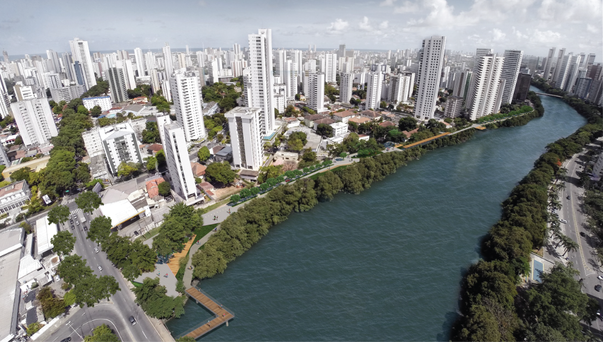
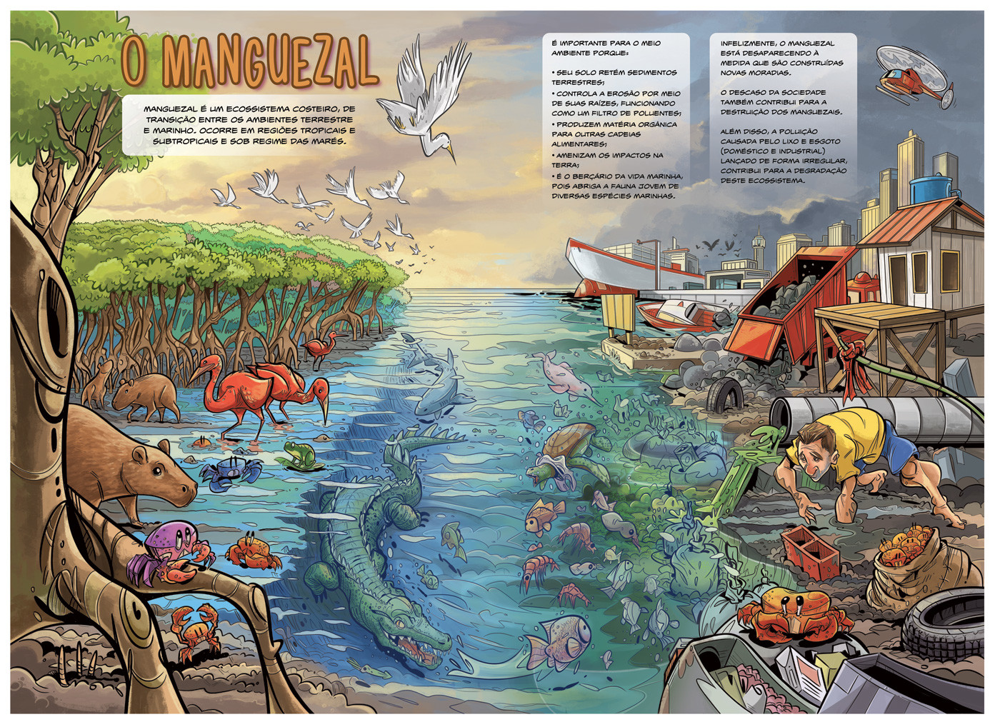
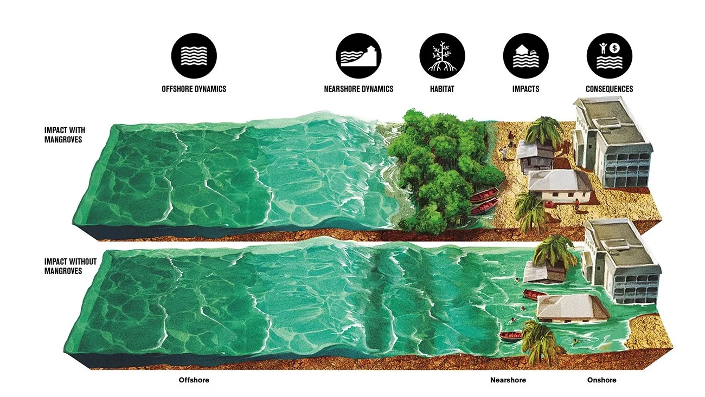

Sobre o nosso projeto
Com este projeto buscamos o debate cívico sobre um tema tão pouco observado por nossa sociedade ao qual nos afeta a curto e longo prazo. Desta forma seguimos buscando soluções, e possíveis maneiras a se lidar com o problema da destruição de nossos manguezais e leitos de rios, buscando dessa maneira abordar uma de trinta obras, ao qual se intitula de Parque das Graças, que tem por intuito utilizar o leito do rio e seu mangue que se forma como uma mata ciliar, para a construção de um parque no projeto urbanístico do Recife. para tentarmos sanar este problema.
Por fim através das futuras observações e dados constatados, buscaremos soluções e maneiras educacionais.
REGISTRE-SE
Projeto Parque das Graças
O projeto Parque das Graças, trata-se de um mútuo acordo entre as diversas partes interessadas, devido ao diálogo entre o poder público, os moradores da região das graças, a universidade Maurício de Nassau, projeto que até então seria de uma via de quatro faixas para veículos que aproveitaria o leito do rio para ligar duas vias de principais do recife, sendo essas Rua Amélia e a Rua Joaquim Nabuco, englobando os bairros: Torre, Graças e Derby.
Contudo, após anos de negociações o projeto passou por diversas alterações até chegar ao que é hoje, no projeto atual, soluções urbanísticas possibilitam espaços de aproximação ao rio, através de passarelas que percorrem as margens e os mangues, e píeres que permitem o acesso de pequenas embarcações. As ruas que se conectam ao rio serão qualificadas para transformar a experiência de andar pelo bairro, criando conexões entre espaços verdes e públicos, que seguem as diretrizes do Parque Capibaribe, de recuperação ambiental, promoção da mobilidade não motorizada, integração sócio-espacial e ativação dos espaços públicos.
Problema Ambiental
Conforme observamos a tratativa do projeto Parque das Graças, a princípio trata-se de uma requalificação urbanística para a cidade do Recife, onde o Parque das Graças encontra-se sendo abrangido por esse projeto urbanístico que conta com mais 30 parques fluviais, esses todos espalhados pela região metropolitana do Recife, ao qual utilizam-se dos leitos dos rios e seus mangues, contudo é preciso observar os diversos problemas ambientais e possíveis impactos em nosso leito de rio, fauna, flora e solo das regiões afetadas.
É notório que o mangue assim como toda a natureza ao seu redor, é necessário para o equilíbrio natural tanto do local quanto de diversos outros, pois, como sabemos o mangue é o berço de toda vida marinha, é no mangue que as mais diversas espécies se reproduzem e se alimentam, criando assim um ciclo. E não seria tão somente a vida marinha, que dependeria do mangue, pois, existem muitas outras espécies de animais no Manguezal, como crustáceos, aves migratórias e aves do próprio mangue, peixes, répteis, mamíferos. Como podemos citar dentre essas espécies, garças, lontras, capivaras, peixes dos mais diversos, caranguejos, camarões, jacarés, entre outros mais, até mesmo animais que estão em alto mar, dependem do manguezal, para se reproduzir em segurança ou se alimentar, pois, suas presas se reproduzem e se abrigam no manguezal, devido a sua riqueza em alimentos e as raízes das arvores serem tão extensas. E não somente os animais necessitam do mangue, o ser humano depende de toda essa vida para sobreviver e para que se tenha um futuro, ao qual possamos viver.
Características do manguezal
Os manguezais são ecossistemas típicos de regiões tropicais litorâneas, caracterizando ambientes aquáticos nos quais mediam o contato entre os cursos hídricos fluviais (água doce) com o mar (água salgada). O solo desses locais é geralmente lamacento, semelhante à configuração pantanosa, rico em matéria orgânica, servindo de substrato para o desenvolvimento de vegetações específicas, tolerantes à salinidade e possuindo órgãos vegetativos com adaptação pouco comum, como é observado por meio das raízes respiratórias responsáveis pela captação de oxigênio (pneumatóforos) e formas que permitem a fixação do vegetal. Entre os ecossistemas florestais, os mangues são reconhecidos por sua capac
Os manguezais são ecossistemas típicos de regiões tropicais litorâneas, caracterizando ambientes aquáticos nos quais mediam o contato entre os cursos hídricos fluviais (água doce) com o mar (água salgada). O solo desses locais é geralmente lamacento, semelhante à configuração pantanosa, rico em matéria orgânica, servindo de substrato para o desenvolvimento de vegetações específicas, tolerantes à salinidade e possuindo órgãos vegetativos com adaptação pouco comum, como é observado por meio das raízes respiratórias responsáveis pela captação de oxigênio (pneumatóforos) e formas que permitem a fixação do vegetal. Entre os ecossistemas florestais, os mangues são reconhecidos por sua capac

Proteção de regiões costeiras
A vegetação do mangue, principalmente seu sistema de raízes, é capaz de reduzir o impacto da água do mar nas regiões costeiras, protegendo cidades litorâneas contra os efeitos da erosão das marés, tempestades, aumento do nível do mar, e até mesmo tsunamis. De acordo com relatórios ambientais internacionais, a presença de manguezais em algumas cidades costeiras foi essencial na redução do impacto de tsunamis ao longo da história, como o tsunami do Oceano Índico, em 2004. Apesar do Brasil nunca ter sido atingido por este fenômeno natural – graças à sua localização geológica privilegiada – outros fenômenos ambientais, como enchentes e alagamentos – causados pela elevação das marés – podem causar grandes estragos ao litoral do país.
Previne o assoreamento
O assoreamento de cursos d'água consiste no acúmulo de sedimentos pelo depósito de solo e outros tipos de detritos no fundo de rios, baías e lagos, sendo responsável por provocar a redução do volume de água de habitats naturais. O assoreamento também torna a água turva, dificulta a entrada de luz e compromete severamente o processo de fotossíntese de espécies vegetais. O fenômeno ainda aumenta o risco de enchentes, visto que a redução do volume dos rios facilita o transbordamento da água, comprometendo a circulação de embarcações. Apesar de natural, o processo é intensificado pela ação humana com o desmatamento de florestas de mangue.

Problemas enfrentados
E como já citado, a vegetação do mangue é de extrema importância para nossa sociedade, pois, não só realiza o papel de prevenção de fenômenos naturais, como enchentes e alagamentos que sofremos anualmente, como realiza o papel de evitar o assoreamento do nosso leito de rio, e realiza mais um papel fundamental, já que são capazes da absorção de gás carbônico do ar, fazendo assim um papel maior do que se é imaginado.
Sabendo que esse descaso nos afetará mais cedo ou mais tarde, e como o ser humano apenas se importa quando já não se tem mais volta ou quando vem a afetá-lo, somente veremos os impactos dessa obra e das outras que fazem parte do projeto Parque do Capibaribe, quando já estiverem assolando a população recifense, com enchentes, alagamentos, ondas de calor e aumento da temperatura da cidade, pois, além do notório título que recai sobre a cidade que por sua vez é chamada de Veneza brasileira, é fato que a cidade do recife foi construída sobre manguezais, fato esse que chega a quase 68% de terras construídas em área de mangue, de maneira que as marés e as chuvas afetam diretamente nossa cidade, pois, quando recife foi construído não foi feito planejamento urbano adequado, desta maneira aterramos, poluímos, desmatamos mangues e braços do rio Capibaribe e outros rios que banham o recife, onde atualmente sofremos com enchentes, alagamentos, no inverno e no verão com ondas de calor, aumento da temperatura da cidade e até mesmo locais sem água e diversos outros problemas ocasionados pelo descaso do poder público, a falta de educação ambiental e a falta da proteção do meio ambiente.